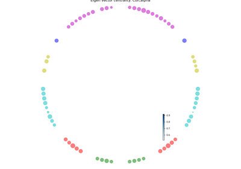
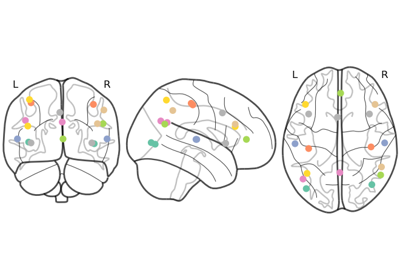
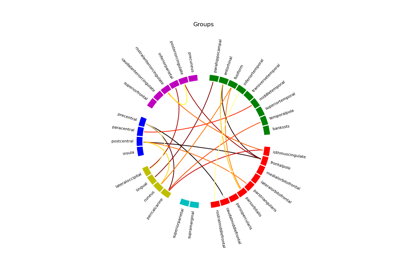
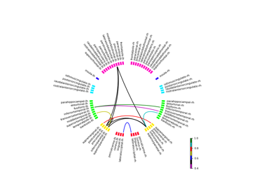
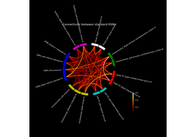
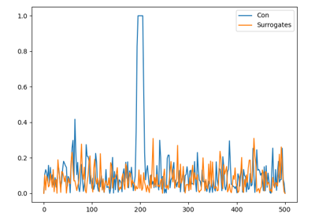

Examples showing various jumeg analysis.
Causality analysis.
Plot Causality Matrix


Connectivity analysis.
Plot degree circle



Plot centrality indices on connectivity circle plot
Plot centrality indices on connectivity circle plot

Visualise Standard RSNs

Generic Grouped Connectivity Circle
Generic Grouped Connectivity Circle


sphx_glr_auto_examples_connectivity_plot_test_transform_mni_to_ras.py
To plot a vertex point, convert it to MNI coordinates and then reconvert it back to RAS to obtain the vertex number.


Shuffle channels’ data in the time domain and plot.
Shuffle channels' data in the time domain and plot.



Standard RSNs on the connectivity circle
Standard RSNs on the connectivity circle

sphx_glr_auto_examples_connectivity_plot_connectivity_between_standard_rsns.py
Modified MNE-Python example script to show connectivity between standard

sphx_glr_auto_examples_connectivity_plot_generate_surrogate_connectivity.py
Surrogate computation

Simulating Connectivity
ICA Decomposition
Plot data distribution

Plot rank estimation

MFT


Preprocessing